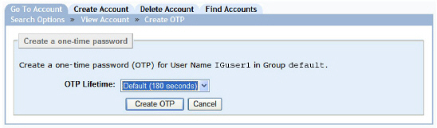

|
IdentityGuard Server 12.0 Administration Guide |
|
IdentityGuard Server 12.0 Administration Guide |
One-time passwords can be generated and delivered automatically by your application, or they can be generated and delivered by an administrator. Typically administrators create and deliver an OTP when:
● an automated mechanism does not exist
● the automated mechanism is not currently working
Administrators must have the correct role permissions to complete these procedures. See User one-time password permissions for a list of all role permissions relating to one-time passwords.
To create one-time passwords for a user
1. Log in to the Entrust IdentityGuard Administration interface as the administrator.
 On the
Windows computer where Entrust IdentityGuard is installed
On the
Windows computer where Entrust IdentityGuard is installed
2. Click User Accounts on the main menu.
3. To find a specific user, use the Go To Account tab (see To search for information about one user).
4. Under to Authentication Types, click One-time Password
5. Click Create OTP.
The Create OTP page appears.

6. From the OTP Lifetime drop-down list, select the lifetime of the one-time password. This option is only available if you have the userOTPOverridePolicy permission. See User one-time password permissions for more information about OTP permissions.
● Default. The default lifetime is set by policy.
● Set OTP lifetime. The OTP is valid for the amount of time you specify. Enter a number value and associate it with a time value from the drop-down list (seconds or minutes).
● OTP never expires. The OTP does not have a lifetime.
7. Click Create OTP.
The one-time password details appear on the Account Information pane for the user.
To create one-time passwords for users in bulk
8. Log in to the Entrust IdentityGuard Administration interface as the administrator.
On the
Windows computer where Entrust IdentityGuard is installed
2. Click Bulk Operations from the main menu.
3. From the Bulk Operation page, click Browse to add the data file. For more information about data files for bulk operations, see Bulk operations in the Administration interface and One-time password bulk operations.
4. From the Operation to Perform drop-down list, select Create OTPs for users, located under One-time Passwords.
5. From the Halt Processing drop-down list, select the number of errors to allow before processing stops due to too many errors. (See Validating bulk files.)
6. Click Perform Bulk Operation.
The Bulk Operation in Progress page appears. The size of your bulk operation directly affects the time the operation takes to process, and if your bulk file is large, this operation may take up to a few minutes. This page indicates the initial status of the operation.
7. Click Update Results to view the status of your bulk operation. (The Results page is also updated automatically every 10 seconds.)
8. Click Done to return to the Bulk Operation page.